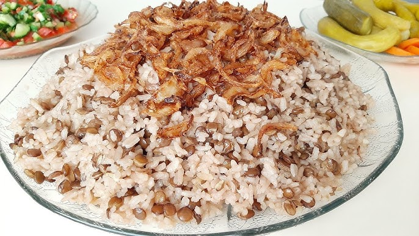

Odin Recipes
Mujaddara

Description
Mujaddara is one of the most famous popular Levantine dishes out there, made up of rice, lentils and crispy onion strips.
It is as healthy as it is delicious and not as heavy to the stomach.
Follow the below recipe and experience one of the arabic foods that are simple to make
but very enjoyable to the taste buds.
Ingredients:
- Brown lentils and basmati or any other long grain rice - the way I calculate the quantity is that I allocate 1 teacup of rice and 1 teacup of lentils for
each person and then I add 1-2 more teacups just in case it's not enough (and it might be so since this dish is so light and delicious)
- Large onion - the quantity depends ofcourse on the quantity of rice and lentils
- Oil (preferably olive oil as this one of the key components that give the mujaddara its authentic flavour)
- 1 tsp of ground black pepper
- 1 tsp of ground cumin
- Salt to taste
Steps:
- Wash the rice and lentils:
Wash the rice 2-3 times and let it soak for about 30 minutes.
- Cook the lentils:
Wash the lentils as you did the rice and heat some olive oil in a pot. Once hot, add the lentils and stir every few seconds for about 2-3 minutes.
- Add water and boil:
Add hot water to the pot (about 2 cups of water for every cup of rice). Let the lentils boil for about 35 minutes.
- Fry the onions:
While the lentils are boiling, cut the onion into thin strips and fry them until they turn crispy and golden brown.
- Add rice and season:
After boiling the lentils for 20 minutes, drain the soaked rice and add it to the pot. Season with black pepper, cumin, and salt, then mix
everything well. The rice will cool down the water, so increase the heat until it starts boiling again. Once it boils, lower the heat to the minimum,
cover the pot, and let the water evaporate (about 20 minutes, but start checking after 15 minutes).
- Serve the dish:
Once the water has evaporated, transfer the rice and lentil mixture to a serving plate. You can either mix the fried onions into the rice or sprinkle
them on top.
- Optional sides:
Serve with a simple mixed salad (cucumbers, tomatoes, onions, parsley, olive oil, and lemon juice) and some pickles on the side.
- Enjoy!